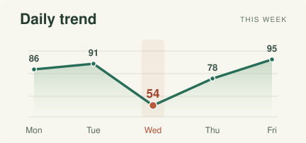

Mac · ChatGPT in Chrome
Just took a screenshot? One click adds it to ChatGPT.
Click its thumbnail at the edge of your Mac screen to attach it to your current ChatGPT draft in Chrome.
macOS 13+ · Apple silicon · Intel
Weekly reportInteractive illustration

ChatGPTCurrent draft

Click the screenshot at the right edge.